<!doctype html>
<html lang="ro">
<head>
<meta charset="utf-8">
<meta name="viewport" content="width=device-width, initial-scale=1, viewport-fit=cover">
<title>Misiunea Webmaster</title>
<meta name="description" content="Lecție-joc pentru clasa a VIII-a: pagini web în HTML, de la etichete și schelet la imagini, liste, legături, formatare și siguranța datelor.">
<link rel="preconnect" href="https://fonts.googleapis.com">
<link rel="preconnect" href="https://fonts.gstatic.com" crossorigin>
<link rel="stylesheet" href="https://fonts.googleapis.com/css2?family=Unbounded:wght@500;700;800&family=Figtree:ital,wght@0,400;0,600;0,700;1,400&family=Fira+Code:wght@500;600&display=swap">
<link rel="stylesheet" href="../_motor/motor.css">
<style>
:root{
  --desk:#F1EEEA; --paper:#FFFFFF; --paper2:#F7F2EC; --line:#E0D6CB;
  --ink:#1F1A24; --ink2:#62586A; --accent:#B4441B; --accentInk:#FFFFFF; --sel:#FBE1D3;
  --mark:#FFE08A; --markInk:#1F1A24; --ok:#1C6E4A; --okbg:#E0F1E8; --bad:#B42F3C; --badbg:#F9E3E5;
  --fd:"Unbounded","Segoe UI",system-ui,sans-serif; --fb:"Figtree","Segoe UI",system-ui,sans-serif; --fm:"Fira Code",Consolas,monospace;
  --tag:#6B3FA0;
}
@media (prefers-color-scheme:dark){:root:not([data-theme="light"]){
  --desk:#15121A; --paper:#1F1A26; --paper2:#2A2333; --line:#3A3145;
  --ink:#EEE8F2; --ink2:#AFA3B8; --accent:#FF8B5E; --accentInk:#1A1016; --sel:#4A2A22;
  --mark:#F2CF63; --markInk:#1F1A24; --ok:#63D19B; --okbg:#173326; --bad:#FF8A95; --badbg:#3D1E24;
  --tag:#C9A5F2;
}}
:root[data-theme="dark"]{
  --desk:#15121A; --paper:#1F1A26; --paper2:#2A2333; --line:#3A3145;
  --ink:#EEE8F2; --ink2:#AFA3B8; --accent:#FF8B5E; --accentInk:#1A1016; --sel:#4A2A22;
  --mark:#F2CF63; --markInk:#1F1A24; --ok:#63D19B; --okbg:#173326; --bad:#FF8A95; --badbg:#3D1E24;
  --tag:#C9A5F2;
}
/* tema jocului: bara unui browser (butoanele ferestrei + bara de adresă) și etichete HTML în titlu */
.banda{display:flex;align-items:center;gap:10px;padding:7px 12px;min-height:34px}
.banda .dots{display:flex;gap:6px;flex:none}
.banda .dots i{width:10px;height:10px;border-radius:50%;background:var(--line);display:block}
.banda .dots i:first-child{background:#E0604E}
.banda .dots i:nth-child(2){background:#E6B33E}
.banda .dots i:nth-child(3){background:#58B26B}
.banda .url{flex:1;min-width:0;font-family:var(--fm);font-size:.72rem;color:var(--ink2);background:var(--paper);border:1px solid var(--line);border-radius:999px;padding:2px 12px;white-space:nowrap;overflow:hidden;text-overflow:ellipsis}
.banda .url b{color:var(--ink);font-weight:600}
h1{font-size:clamp(1.55rem,6.4vw,2.9rem);font-weight:800;overflow-wrap:anywhere}
h2{font-size:clamp(1.25rem,4.6vw,1.9rem);font-weight:700}
h1 .tg{color:var(--tag);font-family:var(--fm);font-weight:500}
.reading code,.q code{color:var(--tag)}
/* Fira Code are ligaturi (</ devine un singur semn): în HTML elevul trebuie să vadă fiecare caracter */
code,.code,kbd,textarea,.hunt,.banda,.eyebrow,.hud,.tabs,.ancora,.opt,.cls-row,.toast{font-variant-ligatures:none;font-feature-settings:"liga" 0,"calt" 0}
</style>
</head>
<body>
<script src="../_motor/motor.js"></script>
<script>
/* Tipul de întrebare „cod”: elevul scrie HTML, jocul îl citește cu DOMParser (fără să execute nimic)
   și verifică STRUCTURA paginii rezultate, nu textul identic.
   Întrebare: {t:'cod', q, start:'cod de pornire', checks:[…], solutie:'cod corect', why}
   O verificare (toate câmpurile opționale, se combină pe ACELAȘI element):
     el:'selector CSS'   · text:'textul exact (fără diferențe de litere mari/diacritice/spații)'
     full:true (elementul are text) · attrs:{src:'carpati.jpg', alt:'*'} ('*' = orice valoare nevidă)
     min:3, child:'li' (cel puțin 3 copii directi cu text) · style:{'text-align':'center','background-color':'*'}
     absent:'regex' (regex-ul NU are voie să apară în textul paginii) · msg:'ce îi spunem elevului' */
const JocCod=(function(){
  const norm=s=>String(s||'').normalize('NFD').replace(/[̀-ͯ]/g,'').replace(/[ţ]/g,'t').replace(/\s+/g,' ').trim().toLowerCase();
  const CSS=`.cod-tools{display:flex;flex-wrap:wrap;gap:6px;margin-bottom:6px}
.cod-tools button{font-family:var(--fm);font-size:.9rem;min-width:2.4em;padding:4px 8px;border:1px solid var(--line);border-radius:6px;background:var(--paper2)}
.cod-ta{display:block;width:100%;min-height:11em;resize:vertical;font-family:var(--fm);font-size:.9rem;line-height:1.45;padding:10px;border:1px solid var(--line);border-radius:6px;background:var(--paper);color:var(--ink);tab-size:2;white-space:pre;overflow:auto}
.cod-prev{margin-top:10px;border:1px solid var(--line);border-radius:8px;overflow:hidden;background:var(--paper2)}
.cod-prev .bar{display:flex;align-items:center;gap:6px;padding:4px 10px;font-family:var(--fm);font-size:.7rem;color:var(--ink2)}
.cod-prev .bar i{width:8px;height:8px;border-radius:50%;background:var(--line);display:block;flex:none}
.cod-prev iframe{display:block;width:100%;height:190px;border:0;border-top:1px solid var(--line);background:#fff}
.cod-ok{color:var(--ok)}`;
  function parse(src){return new DOMParser().parseFromString(src,'text/html')}
  function styles(el){const o={};String(el.getAttribute('style')||'').split(';').forEach(p=>{const i=p.indexOf(':');if(i>0)o[p.slice(0,i).trim().toLowerCase()]=p.slice(i+1).trim().toLowerCase()});return o}
  function fits(el,c){
    if(c.text!=null&&norm(el.textContent)!==norm(c.text))return false;
    if(c.full&&!norm(el.textContent))return false;
    if(c.attrs)for(const [k,v] of Object.entries(c.attrs)){const a=el.getAttribute(k);if(a==null||!a.trim())return false;if(v!=='*'&&a.trim().replace(/^\.\//,'').toLowerCase()!==String(v).toLowerCase())return false}
    if(c.style){const st=styles(el);for(const [k,v] of Object.entries(c.style)){const alt=k==='background-color'?(st[k]||st['background']):st[k];if(!alt)return false;if(v!=='*'&&alt.replace(/\s*!important$/,'')!==v)return false}}
    if(c.min){const kids=[...el.children].filter(x=>x.matches(c.child)&&norm(x.textContent));if(kids.length<c.min)return false}
    return true;
  }
  function problems(src,checks){
    const doc=parse(src),out=[];
    for(const c of checks){
      /* absent se caută în TOT codul publicat (text, atribute, comentarii), nu doar în textul vizibil: și codul sursă se vede pe web */
      if(c.absent){if(new RegExp(c.absent,'i').test(doc.documentElement.textContent+'\n'+src))out.push(c.msg);continue}
      if(![...doc.querySelectorAll(c.el)].some(el=>fits(el,c)))out.push(c.msg);
    }
    return out;
  }
  /* previzualizare: pagina elevului, curățată, într-un iframe sandbox fără scripturi și fără rețea */
  function previewDoc(src){
    const doc=parse(src);
    doc.querySelectorAll('script,iframe,object,embed,link,meta[http-equiv],base,form').forEach(x=>x.remove());
    doc.querySelectorAll('*').forEach(el=>[...el.attributes].forEach(a=>{if(/^on/i.test(a.name))el.removeAttribute(a.name)}));
    const m=doc.createElement('meta');m.setAttribute('http-equiv','Content-Security-Policy');m.setAttribute('content',"default-src 'none'; style-src 'unsafe-inline'; img-src data:");
    doc.head.prepend(m);
    const s=doc.createElement('style');s.textContent='html{color-scheme:light}body{font-family:system-ui,sans-serif;margin:10px;background:#fff;color:#111}a{pointer-events:none}img{max-width:100%}';
    doc.head.insertBefore(s,m.nextSibling);
    return '<!doctype html>'+doc.documentElement.outerHTML;
  }
  function render(Q,body,api){
    if(!document.getElementById('tip-cod-css')){const st=document.createElement('style');st.id='tip-cod-css';st.textContent=CSS;document.head.appendChild(st)}
    const keys=['<','>','/','"','=','<p>','<li>'];
    body.innerHTML=`<div class="cod-tools" role="group" aria-label="Semne de inserat">${keys.map(k=>`<button type="button" data-k="${api.esc(k)}">${api.esc(k)}</button>`).join('')}</div>
      <textarea class="cod-ta" id="codta" spellcheck="false" autocapitalize="off" autocomplete="off" autocorrect="off" aria-label="Codul HTML al paginii">${api.esc(Q.start||'')}</textarea>
      <div class="cod-prev"><div class="bar"><i></i><i></i><i></i><span>așa arată pagina ta</span></div><iframe sandbox="" title="Previzualizarea paginii tale" id="codprev"></iframe></div>
      <p class="hint" style="margin:6px 0 0">Previzualizarea se schimbă cât scrii. Imaginile nu se încarcă în joc, așa că în locul lor vezi textul <code>alt</code>. Legăturile din previzualizare nu se deschid.</p>`;
    const ta=body.querySelector('#codta'),fr=body.querySelector('#codprev');
    let tm=null;const upd=()=>{fr.srcdoc=previewDoc(ta.value)};
    ta.addEventListener('input',()=>{clearTimeout(tm);tm=setTimeout(upd,250)});
    body.querySelectorAll('.cod-tools button').forEach(b=>b.onclick=()=>{if(api.done())return;const k=b.dataset.k,a=ta.selectionStart,e=ta.selectionEnd;ta.value=ta.value.slice(0,a)+k+ta.value.slice(e);ta.focus();ta.selectionStart=ta.selectionEnd=a+k.length;upd()});
    upd();
    const nav=api.checkButton(()=>{
      upd();const pr=problems(ta.value,Q.checks);
      if(!pr.length){ta.readOnly=true;nav.innerHTML='';api.resolve(true)}
      else{api.resolve(false,api.esc(pr.slice(0,2).join(' '))+(pr.length>2?` (încă ${pr.length-2})`:''));
        api.revealButton(()=>{ta.value=Q.solutie;ta.readOnly=true;upd();nav.innerHTML='';api.giveUp('un cod corect e acum în cutie, iar pagina lui e în previzualizare. Compară-l cu al tău.')})}
    });
  }
  function rezolva(Q,body){const ta=body.querySelector('#codta');ta.value=Q.solutie;ta.dispatchEvent(new Event('input',{bubbles:true}))}
  /* răspunsul greșit tipic, pornind de la soluția corectă: prima greșeală de copil pe care verificările ar trebui s-o prindă.
     Dacă niciuna nu schimbă ceva ce se verifică, rămâne codul de pornire (neterminat). */
  const GRESELI=[
    s=>s.replace(/\salt\s*=\s*"[^"]*"/gi,''),                    /* imagine fără text alternativ */
    s=>s.replace(/<a\s+href=/gi,'<a src='),                      /* src în loc de href la legătură */
    s=>s.replace(/text-align\s*:\s*center/gi,'align: center'),   /* proprietate inventată */
    s=>s.replace(/\s*<li>[^<]*<\/li>(?![\s\S]*<li>)/i,'').replace(/\s*<li>[^<]*<\/li>(?![\s\S]*<li>)/i,''), /* listă cu prea puține elemente */
    s=>s.replace(/(<h1[^>]*>[\s\S]*?<\/h1>)\s*(<p>[^<]*<\/p>)/i,'$1\n$2\n$2')  /* copiat în loc de mutat */
  ];
  function gresit(Q,body){
    const ta=body.querySelector('#codta');
    let src=Q.start||'';
    for(const g of GRESELI){const s=g(Q.solutie);if(s!==Q.solutie&&problems(s,Q.checks).length){src=s;break}}
    ta.value=src;ta.dispatchEvent(new Event('input',{bubbles:true}));
  }
  return {render,rezolva,gresit,problems,GRESELI};
})();

/* conținuturile programei (OMEN 3393/2017), textul exact din curriculum.json */
const P={
  interfata:'Elemente de interfaţă ale unui editor de pagini web',
  instrumente:'Instrumente de bază ale editorului de pagini web',
  structura:'Elemente de structură ale unei pagini web: antet, titlu, corp',
  editare:'Operații de editare a elementelor de conținut (paragraf, imagini, tabele, liste, legături): inserare, ștergere, mutare, copiere',
  formatare:'Operații de formatare la nivel de text, paragraf, fundal',
  securitate:'Securitate cibernetică'
};

const LEVELS=[
{t:'Cum e făcută o pagină web',lectii:[14],continuturi:[P.interfata,P.instrumente],text:`
<p>O pagină web e un <mark>fișier text</mark> cu extensia <strong>.html</strong>. Îl poți deschide și în Notepad. <strong>Browserul</strong> (Chrome, Edge, Firefox) îl citește și desenează pagina.</p>
<p>Textul e scris în <mark>HTML</mark>, un <strong>limbaj de marcare</strong>: nu calculează, doar spune „aici e un titlu”, „aici e un paragraf”. Marcajele sunt <mark>etichete</mark>: <code>&lt;p&gt;</code> deschide, <code>&lt;/p&gt;</code> închide, cu bara <code>/</code>.</p>
<p>Pagina o faci într-un <mark>editor de pagini web</mark>. În cele mai multe găsești: <strong>zona de cod</strong>, <strong>previzualizarea</strong> și <strong>bara de instrumente</strong>. Butoanele ei inserează un titlu, o imagine, o listă sau o legătură și scriu eticheta în locul tău. Apoi <strong>salvezi</strong> fișierul .html și îl deschizi în browser.</p>
<p>Cutiile de cod din joc sunt un astfel de editor, mai mic.</p>
<figure class="captura"><a href="../web-viii/img/cod-schelet.webp" target="_blank">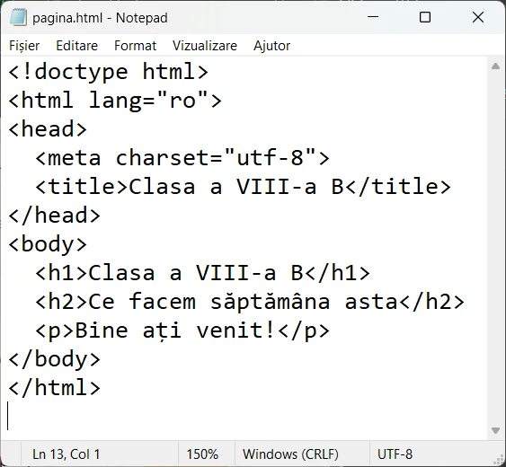</a>
<figcaption><b>Codul</b> — fișierul <code>.html</code> deschis în Notepad. Etichetele sunt scrise ca text.</figcaption></figure>
<figure class="captura"><a href="../web-viii/img/pag-schelet.webp" target="_blank">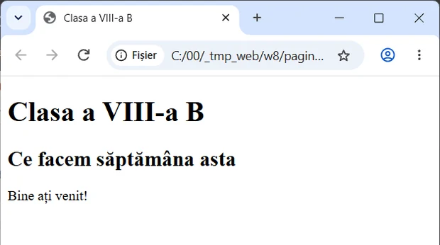</a>
<figcaption><b>Rezultatul</b> — același fișier, deschis în browser. Etichetele nu se mai văd: se vede pagina.</figcaption></figure>`,
qs:[
 {t:'choice',q:'Ce este HTML?',o:['Un limbaj de marcare, care arată ce rol are fiecare parte a paginii','Un limbaj de programare, care face calcule și ia decizii','Un browser, programul care deschide paginile web','Un program de desenat imaginile unei pagini'],ok:0,why:'HTML doar marchează: asta e titlu, asta e paragraf. Calculele și deciziile sunt treaba limbajelor de programare.'},
 {t:'choice',q:'Care etichetă ÎNCHIDE un paragraf?',o:['<p>','</p>','<\\p>','<p/>'],ok:1,why:'Eticheta de închidere repetă numele etichetei, cu bara <code>/</code> imediat după <code>&lt;</code>. Bara inversă <code>\\</code> nu are acest rol în HTML.'},
 {t:'match',q:'Potrivește fiecare parte cu rolul ei.',pairs:[['Browser','Citește fișierul și desenează pagina'],['Zona de cod','Aici scrii și vezi etichetele'],['Previzualizarea','Arată pagina cum o va desena browserul'],['Bara de instrumente','Butoane care scriu etichete în locul tău']],why:'În editor lucrezi în zona de cod sau cu butoanele barei, verifici în previzualizare, apoi deschizi fișierul salvat în browser.'},
 {t:'choice',q:'În editor apeși butonul care inserează o imagine. Ce se schimbă în zona de cod?',o:['Apare o etichetă , scrisă de editor','Nu se schimbă nimic în cod','Se șterg etichetele de până atunci','Se deschide singur browserul'],ok:0,why:'Butoanele editorului sunt o scurtătură: scriu în cod aceleași etichete pe care le-ai scrie de mână.'},
 {t:'tf',q:'O pagină web e un fișier text, pe care îl poți deschide și în Notepad.',ok:true,why:'Adevărat. În Notepad vezi etichetele, iar în browser vezi pagina desenată după ele.'},
 {t:'classify',q:'Etichetă care deschide sau etichetă care închide?',cats:['Deschide','Închide'],items:[['<h1>',0],['</h1>',1],['<body>',0],['</ul>',1],['<li>',0],['</a>',1]],why:'Bara <code>/</code> apare doar în eticheta care închide.'}
]},
{t:'Antet, titlu, corp',lectii:[15],continuturi:[P.structura],text:`
<p>Orice pagină are același <mark>schelet</mark>. Prima linie, <code>&lt;!doctype html&gt;</code>, anunță browserul că urmează o pagină HTML5.</p>
<p>Totul stă apoi în <code>&lt;html&gt;</code>, care are două părți:</p>
<ul>
<li><code>&lt;head&gt;</code>, <mark>antetul</mark>: informații despre pagină, care nu apar în fereastră. Aici pui <code>&lt;meta charset="utf-8"&gt;</code>, ca literele ș și ț să apară corect, și <code>&lt;title&gt;</code>, <mark>titlul</mark> scris pe fila browserului;</li>
<li><code>&lt;body&gt;</code>, <mark>corpul</mark>: tot ce vede cititorul.</li>
</ul>
<p>În corp, titlurile de pe pagină sunt <code>&lt;h1&gt;</code> … <code>&lt;h6&gt;</code>. <code>&lt;h1&gt;</code> e cel mai mare, pentru subiectul paginii.</p>
<p>O etichetă deschisă înăuntrul alteia se închide tot înăuntru: <code>&lt;head&gt;&lt;title&gt;…&lt;/title&gt;&lt;/head&gt;</code>.</p>
<figure class="captura"><a href="../web-viii/img/cod-title.webp" target="_blank">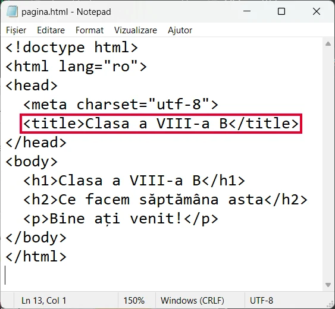</a>
<figcaption>În cod: <code>&lt;title&gt;</code> stă în <code>&lt;head&gt;</code> (încadrat).</figcaption></figure>
<figure class="captura"><a href="../web-viii/img/pag-title.webp" target="_blank">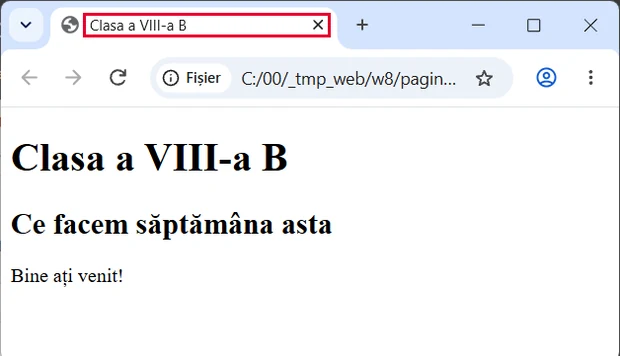</a>
<figcaption>În browser: același text apare pe <b>fila browserului</b> (încadrat). În pagină nu apare.</figcaption></figure>`,
qs:[
 {t:'choice',q:'Unde apare textul scris în <code>&lt;title&gt;</code>?',o:['Pe fila browserului','Cu litere mari, sus în pagină','La finalul paginii','Nicăieri, e doar o notiță'],ok:0,why:'<code>&lt;title&gt;</code> stă în antet, iar antetul nu se vede în fereastră. Browserul scrie titlul pe filă.'},
 {t:'order',q:'Pune liniile scheletului în ordine.',items:['<!doctype html>','<html>','<head><title>Clasa mea</title></head>','<body>','<h1>Clasa mea</h1>','</body>','</html>'],why:'Antetul vine înaintea corpului. Ce s-a deschis mai târziu se închide mai devreme: <code>&lt;/body&gt;</code> înainte de <code>&lt;/html&gt;</code>.'},
 {t:'classify',q:'Ce se pune în antet și ce în corp?',cats:['Antet (head)','Corp (body)'],items:[['<title>Clasa mea</title>',0],['<h1> cu numele clasei',1],['un paragraf despre excursie',1],['<meta charset="utf-8">',0],['o imagine',1]],why:'În antet stau informațiile despre pagină, care nu se văd în fereastră. Tot ce citește sau privește vizitatorul stă în corp.'},
 {t:'hunt',q:'În codul de mai jos sunt 3 greșeli de etichete. Apasă pe ele.',src:'<html> <head> <title>Clasa mea</title> [[</heat>|Antetul se închide cu </head>.]] <body> [[<h7>Bine ați venit!</h7>|Titlurile merg doar de la <h1> la <h6>.]] <p>Suntem 24 de elevi.</p> [[<body>|Corpul se închide cu </body>, cu bară.]] </html>',why:'Browserul nu afișează erori pentru etichete greșite. Ghicește ce ai vrut, iar pagina iese altfel decât plănuiai.'},
 {t:'tf',q:'<code>&lt;h1&gt;</code> și <code>&lt;title&gt;</code> fac același lucru.',ok:false,why:'Fals. <code>&lt;title&gt;</code> e în antet și apare pe filă. <code>&lt;h1&gt;</code> e în corp și apare pe pagină.'}
]},
{t:'Paragrafe și imagini',lectii:[16],continuturi:[P.editare],text:`
<p>Textul stă în <mark>paragrafe</mark>: <code>&lt;p&gt;Text&lt;/p&gt;</code>. Enter-urile din cod nu contează pentru browser. Un rând nou în același paragraf cere <code>&lt;br&gt;</code>.</p>
<p>Imaginea: <code>&lt;img src="carpati.jpg" alt="Munți cu zăpadă"&gt;</code>, fără etichetă de închidere. <code>src</code> și <code>alt</code> sunt <mark>atribute</mark>, scrise în eticheta de deschidere:</p>
<ul>
<li><code>src</code> spune ce fișier se afișează;</li>
<li><code>alt</code> e <mark>textul alternativ</mark>: apare dacă imaginea nu se încarcă și e citit cu voce tare pentru nevăzători.</li>
</ul>
<p>Un element se <mark>editează întreg</mark>, de la eticheta care deschide la cea care închide. Îl selectezi, apoi: <kbd>Ctrl</kbd>+<kbd>C</kbd> copiază, <kbd>Ctrl</kbd>+<kbd>X</kbd> decupează ca să-l muți, <kbd>Ctrl</kbd>+<kbd>V</kbd> lipește, <kbd>Delete</kbd> șterge.</p>
<figure class="captura"><a href="../web-viii/img/cod-paragrafe.webp" target="_blank">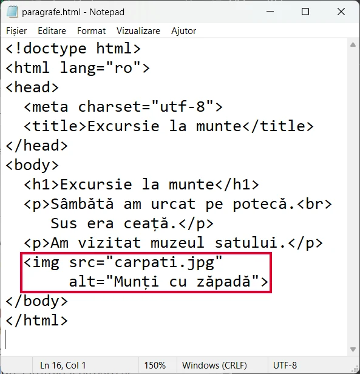</a>
<figcaption>În cod: două <code>&lt;p&gt;</code>, un <code>&lt;br&gt;</code> și un <code>&lt;img&gt;</code> cu <code>src</code> și <code>alt</code> (încadrat).</figcaption></figure>
<figure class="captura"><a href="../web-viii/img/pag-paragrafe.webp" target="_blank">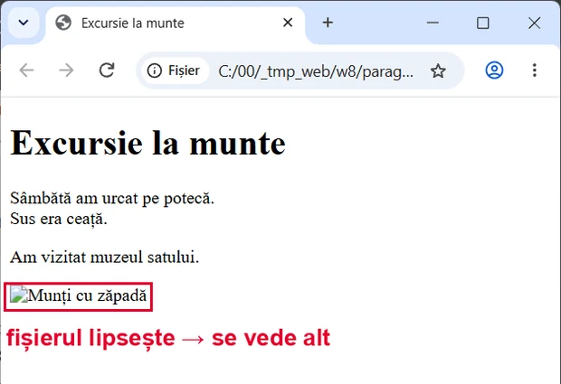</a>
<figcaption>În browser: <code>&lt;br&gt;</code> rupe rândul. Fișierul imagine lipsește, așa că se vede <b>textul din <code>alt</code></b>.</figcaption></figure>`,
qs:[
 {t:'choice',q:'Scrii în cod două propoziții pe linii diferite, dar în același <code>&lt;p&gt;</code>, fără <code>&lt;br&gt;</code>. Cum apar în browser?',o:['Pe același rând, una după alta','Pe două rânduri','Ca două paragrafe','Nu apar deloc'],ok:0,why:'Browserul nu ține cont de Enter-urile din cod. Un rând nou îl ceri cu <code>&lt;br&gt;</code> sau cu un paragraf nou.'},
 {t:'choice',q:'Ce face atributul <code>alt</code> al unei imagini?',o:['Dă textul care ține locul imaginii când ea nu se vede','Alege fișierul imaginii care se afișează pe pagină','Mărește imaginea până umple toată lățimea','Pune un chenar colorat în jurul imaginii'],ok:0,why:'<code>alt</code> descrie imaginea în cuvinte. Fișierul îl alege <code>src</code>.'},
 {t:'tf',q:'Eticheta <code>&lt;img&gt;</code> se închide cu <code>&lt;/img&gt;</code>.',ok:false,why:'Fals. Imaginea nu are text înăuntru, deci nu are ce închide. Tot ce îi trebuie stă în atribute.'},
 {t:'cod',q:'Pagina despre Munții Carpați are doar titlul. Sub el, adaugă un paragraf (scrie ce vrei tu) și imaginea <code>carpati.jpg</code>, cu un text alternativ potrivit.',
  start:'<h1>Munții Carpați</h1>\n\n',
  checks:[
   {el:'h1',text:'Munții Carpați',msg:'Titlul <h1> „Munții Carpați” a dispărut. Pune-l la loc.'},
   {el:'p',full:true,msg:'Lipsește un paragraf cu text: <p>…</p>.'},
   {el:'img',attrs:{src:'carpati.jpg'},msg:'Nu găsesc o imagine cu src="carpati.jpg".'},
   {el:'img',attrs:{src:'carpati.jpg',alt:'*'},msg:'Imaginea are nevoie de un text alternativ: alt="…" scris în eticheta .'}
  ],
  solutie:'<h1>Munții Carpați</h1>\n<p>Carpații formează un arc prin România.</p>\n',
  why:'Jocul a citit codul ca un browser și a găsit un <code>&lt;p&gt;</code> cu text și un <code>&lt;img&gt;</code> cu <code>src</code> și <code>alt</code>. Cuvintele tale pot fi oricare.'},
 {t:'cod',q:'Paragraful despre arc e sub imagine, iar la final a rămas un paragraf de probă. <strong>Mută</strong> paragraful despre arc imediat sub titlu și <strong>șterge</strong> de tot paragraful de probă.',
  start:'<h1>Munții Carpați</h1>\n\n<p>Carpații formează un arc prin România.</p>\n<p>Paragraf de probă, de șters.</p>',
  checks:[
   {el:'h1 + p',text:'Carpații formează un arc prin România.',msg:'Paragraful despre arc nu stă imediat sub titlul <h1>. Mută-l întreg, de la <p> la </p>.'},
   {absent:'<p[^>]*>[^<]*arc\\s+prin[\\s\\S]*<p[^>]*>[^<]*arc\\s+prin',msg:'Paragraful despre arc apare de două ori: l-ai copiat, nu l-ai mutat. La mutare, originalul dispare de unde era.'},
   {el:'img',attrs:{src:'carpati.jpg',alt:'*'},msg:'Imaginea cu src="carpati.jpg" și textul ei alternativ au dispărut. Pune-le la loc.'},
   {absent:'Paragraf de prob',msg:'Paragraful de probă e încă în cod. Șterge-l întreg, cu tot cu <p> și </p>.'},
   {absent:'<p[^>]*>\\s*</p>',msg:'A rămas în cod un paragraf gol, <p></p>. Șterge și etichetele, nu doar textul.'}
  ],
  solutie:'<h1>Munții Carpați</h1>\n<p>Carpații formează un arc prin România.</p>\n',
  why:'Jocul a verificat ordinea elementelor: paragraful vine imediat după <code>&lt;h1&gt;</code> și apare o singură dată. Paragraful de probă nu mai e nicăieri în cod.'}
]},
{t:'Liste și tabele',lectii:[17],continuturi:[P.editare],text:`
<p>O <mark>listă neordonată</mark>, cu buline, e <code>&lt;ul&gt;</code>. O <mark>listă ordonată</mark>, numerotată 1, 2, 3, e <code>&lt;ol&gt;</code>. Fiecare element stă într-un <code>&lt;li&gt;</code>, înăuntrul listei.</p>
<p>Un <mark>tabel</mark> se construiește rând cu rând:</p>
<ul>
<li><code>&lt;table&gt;</code> cuprinde tot tabelul;</li>
<li><code>&lt;tr&gt;</code> e un rând (<em>table row</em>);</li>
<li><code>&lt;td&gt;</code> e o celulă cu date, iar <code>&lt;th&gt;</code> e o celulă din capul tabelului, scrisă îngroșat.</li>
</ul>
<p>Coloanele nu se scriu separat: câte celule pui într-un rând, atâtea coloane are tabelul. Fără formatare, tabelul apare fără linii.</p>
<figure class="captura"><a href="../web-viii/img/cod-liste.webp" target="_blank">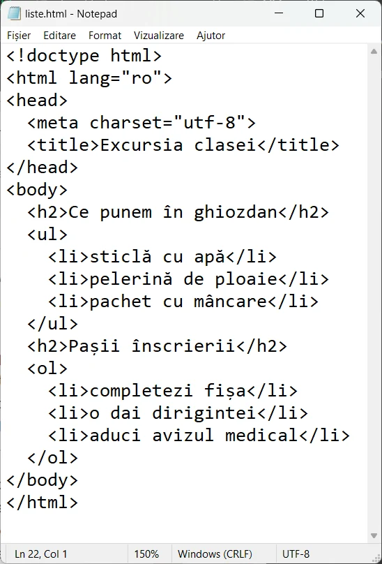</a>
<figcaption>În cod: <code>&lt;ul&gt;</code> și <code>&lt;ol&gt;</code>, cu câte un <code>&lt;li&gt;</code> pe element.</figcaption></figure>
<figure class="captura"><a href="../web-viii/img/pag-liste.webp" target="_blank">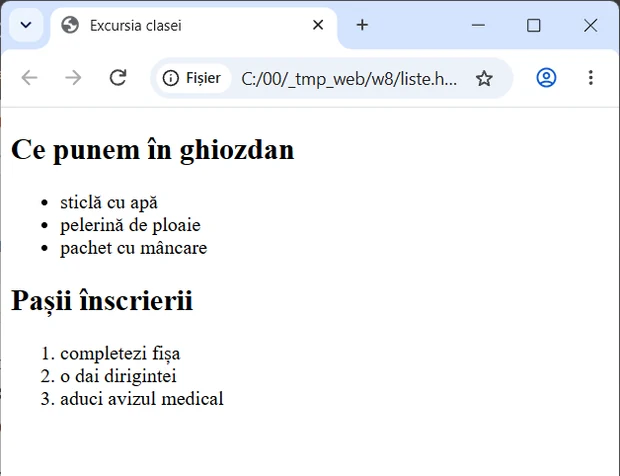</a>
<figcaption>În browser: <code>&lt;ul&gt;</code> iese cu <b>buline</b>, <code>&lt;ol&gt;</code> iese <b>numerotată</b>.</figcaption></figure>
<figure class="captura"><a href="../web-viii/img/cod-tabel.webp" target="_blank">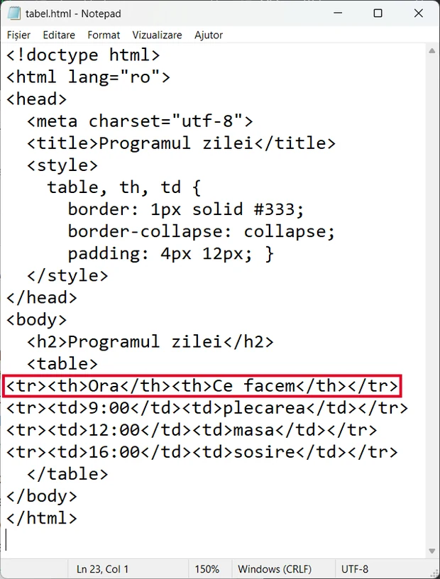</a>
<figcaption>În cod: un <code>&lt;tr&gt;</code> = un rând. Primul rând, cu <code>&lt;th&gt;</code>, e încadrat.</figcaption></figure>
<figure class="captura"><a href="../web-viii/img/pag-tabel.webp" target="_blank">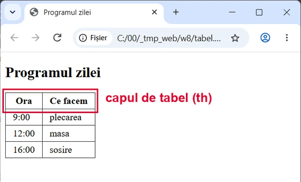</a>
<figcaption>În browser: celulele <code>&lt;th&gt;</code> ies <b>îngroșate</b> (încadrate). Liniile vin din stilul scris în <code>&lt;style&gt;</code>.</figcaption></figure>`,
qs:[
 {t:'choice',q:'Vrei pașii unei rețete, numerotați 1, 2, 3. Ce listă folosești?',o:['<ol>','<ul>','<li>','<table>'],ok:0,why:'<code>&lt;ol&gt;</code> numerotează singură elementele. <code>&lt;ul&gt;</code> pune buline, iar <code>&lt;li&gt;</code> e doar un element din listă.'},
 {t:'choice',q:'Un tabel are 3 etichete <code>&lt;tr&gt;</code>, iar în fiecare sunt 4 <code>&lt;td&gt;</code>. Cum arată?',o:['3 rânduri și 4 coloane','4 rânduri și 3 coloane','12 rânduri','7 celule'],ok:0,why:'Fiecare <code>&lt;tr&gt;</code> e un rând, iar cele 4 celule din el dau 4 coloane. În total, 3 × 4 = 12 celule.'},
 {t:'match',q:'Potrivește eticheta cu rolul ei în tabel.',pairs:[['<table>','Cuprinde tot tabelul'],['<tr>','Un rând'],['<td>','O celulă cu date'],['<th>','O celulă din capul tabelului']],why:'Tabelul se construiește din afară spre înăuntru: tabel, apoi rânduri, apoi celule în fiecare rând.'},
 {t:'cod',q:'Fă o listă cu buline cu cel puțin 3 vârfuri din Carpați. Primul e deja scris.',
  start:'<h2>Vârfuri pe care vreau să le urc</h2>\n<ul>\n  <li>Moldoveanu</li>\n\n</ul>',
  checks:[
   {el:'ul',min:3,child:'li',msg:'Lista <ul> trebuie să aibă cel puțin 3 elemente <li> cu text, puse înăuntrul ei, înainte de </ul>.'}
  ],
  solutie:'<h2>Vârfuri pe care vreau să le urc</h2>\n<ul>\n  <li>Moldoveanu</li>\n  <li>Negoiu</li>\n  <li>Omu</li>\n</ul>',
  why:'Jocul a numărat elementele <code>&lt;li&gt;</code> care stau direct în <code>&lt;ul&gt;</code>. Unul pus după <code>&lt;/ul&gt;</code> nu mai face parte din listă.'},
 {t:'tf',q:'Un element <code>&lt;li&gt;</code> se scrie înăuntrul unei liste <code>&lt;ul&gt;</code> sau <code>&lt;ol&gt;</code>.',ok:true,why:'Adevărat. <code>&lt;li&gt;</code> înseamnă „element de listă”, deci are nevoie de lista din care face parte.'}
]},
{t:'Legături',lectii:[18],continuturi:[P.editare],text:`
<p>O <mark>legătură</mark> (link) se scrie cu eticheta <code>&lt;a&gt;</code>: <code>&lt;a href="orar.html"&gt;Orarul clasei&lt;/a&gt;</code>.</p>
<ul>
<li>atributul <code>href</code> spune <strong>unde</strong> duce legătura;</li>
<li>textul dintre etichete e ce vede cititorul și pe ce apasă.</li>
</ul>
<p>Spre o pagină din <strong>același site</strong> scrii doar numele fișierului: <code>orar.html</code>. Spre o <mark>resursă externă</mark>, adică alt site, scrii adresa întreagă, cu <code>https://</code>, de exemplu <code>https://www.example.com</code>.</p>
<p>Cu atributul <code>target="_blank"</code>, legătura se deschide într-o filă nouă.</p>
<p>Textul legăturii spune unde ajungi: „Orarul clasei”, nu „apasă aici”.</p>
<figure class="captura"><a href="../web-viii/img/cod-legaturi.webp" target="_blank">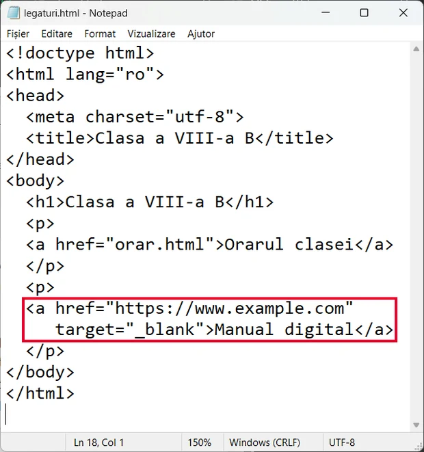</a>
<figcaption>În cod: legătura internă are doar numele fișierului (<code>orar.html</code>); cea externă are adresa întreagă și <code>target="_blank"</code> (încadrată).</figcaption></figure>
<figure class="captura"><a href="../web-viii/img/pag-legaturi.webp" target="_blank">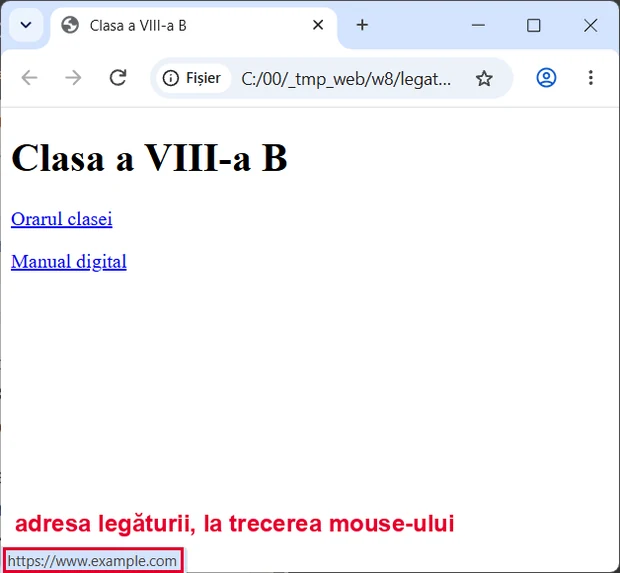</a>
<figcaption>În browser: ține mouse-ul pe legătura externă și <b>adresa apare în colțul din stânga jos</b>.</figcaption></figure>`,
qs:[
 {t:'choice',q:'Care atribut al etichetei <code>&lt;a&gt;</code> spune unde duce legătura?',o:['href','src','alt','link'],ok:0,why:'<code>href</code> ține adresa destinației. <code>src</code> alege fișierul unei imagini, iar <code>link</code> nu e un atribut al lui <code>&lt;a&gt;</code>.'},
 {t:'classify',q:'Legătură spre o pagină din același site sau spre alt site?',cats:['Același site','Alt site (externă)'],items:[['orar.html',0],['https://www.example.com',1],['galerie.html',0],['https://biblioteca.example.org/carti',1],['contact.html',0]],why:'Paginile din același site se scriu doar cu numele fișierului. Adresa întreagă, cu <code>https://</code>, duce în afara site-ului.'},
 {t:'hunt',q:'Legătura de mai jos are 2 greșeli. Apasă pe ele.',src:'[[<a src="orar.html">|Adresa destinației se scrie în href, nu în src.]] Orarul clasei [[<a>|Legătura se închide cu </a>, cu bară.]]',why:'Fără <code>href</code> textul nu duce nicăieri. Fără <code>&lt;/a&gt;</code>, tot ce urmează devine parte din legătură.'},
 {t:'cod',q:'În paragraf, adaugă o legătură spre pagina <code>orar.html</code>, cu textul „Orarul clasei”.',
  start:'<h1>Clasa a VIII-a B</h1>\n<p>Vezi aici: </p>',
  checks:[
   {el:'a',attrs:{href:'orar.html'},msg:'Nu găsesc o legătură <a> cu href="orar.html".'},
   {el:'a',attrs:{href:'orar.html'},text:'Orarul clasei',msg:'Legătura spre orar.html trebuie să aibă textul „Orarul clasei”, între <a …> și </a>.'}
  ],
  solutie:'<h1>Clasa a VIII-a B</h1>\n<p>Vezi aici: <a href="orar.html">Orarul clasei</a></p>',
  why:'Jocul a căutat un <code>&lt;a&gt;</code> cu <code>href="orar.html"</code> și a citit textul dintre etichete, exact cum face browserul.'},
 {t:'tf',q:'„Apasă aici” e un text bun pentru o legătură.',ok:false,why:'Fals. Cine citește doar legăturile, sau le ascultă cu un cititor de ecran, nu află unde duce „apasă aici”.'}
]},
{t:'Formatare: text, paragraf, fundal',lectii:[19],continuturi:[P.formatare],text:`
<p>Aspectul paginii se schimbă cu <mark>stiluri</mark> (CSS). În editorul vizual apeși butoane de formatare. În cod, stilul se scrie în atributul <code>style</code>: <code>&lt;h1 style="color: navy"&gt;</code>.</p>
<p>Formatezi pe trei niveluri:</p>
<ul>
<li><strong>text</strong>: <code>color</code> (culoarea literelor), <code>font-size</code> (mărimea), <code>font-family</code> (fontul);</li>
<li><strong>paragraf</strong>: <code>text-align</code>, alinierea (<code>left</code>, <code>center</code>, <code>right</code>, <code>justify</code>);</li>
<li><strong>fundal</strong>: <code>background-color</code>, de exemplu pe <code>&lt;body&gt;</code>, pentru toată pagina.</li>
</ul>
<p>Proprietatea și valoarea se despart prin <code>:</code>, iar între două proprietăți pui <code>;</code>. Alege culori cu <mark>contrast</mark>: text închis pe fundal deschis.</p>
<figure class="captura"><a href="../web-viii/img/cod-formatare-inainte.webp" target="_blank">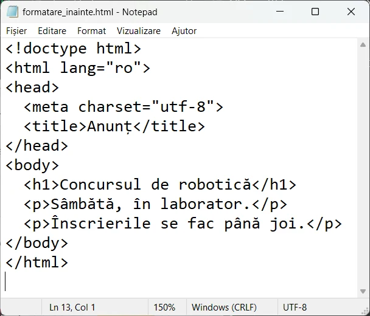</a>
<figcaption><b>Înainte, în cod:</b> niciun atribut <code>style</code>.</figcaption></figure>
<figure class="captura"><a href="../web-viii/img/pag-formatare-inainte.webp" target="_blank">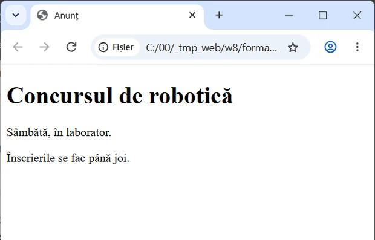</a>
<figcaption><b>Înainte, în browser:</b> aspectul implicit al browserului.</figcaption></figure>
<figure class="captura"><a href="../web-viii/img/cod-formatare-dupa.webp" target="_blank">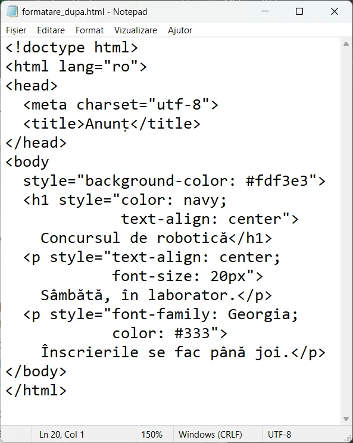</a>
<figcaption><b>După, în cod:</b> <code>background-color</code> pe <code>&lt;body&gt;</code>, iar pe text <code>color</code>, <code>text-align</code>, <code>font-size</code> și <code>font-family</code>.</figcaption></figure>
<figure class="captura"><a href="../web-viii/img/pag-formatare-dupa.webp" target="_blank">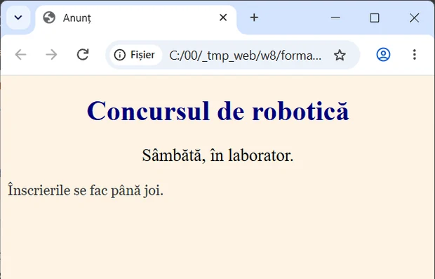</a>
<figcaption><b>După, în browser:</b> titlu albastru și centrat, text mai mare, fundal crem.</figcaption></figure>`,
qs:[
 {t:'choice',q:'Vrei un titlu centrat. Ce scrii în eticheta lui?',o:['style="text-align: center"','style="color: center"','style="align = center"','style="background-color: center"'],ok:0,why:'Alinierea e <code>text-align</code>, iar între proprietate și valoare stă <code>:</code>, nu <code>=</code>.'},
 {t:'classify',q:'Pe ce nivel lucrează fiecare proprietate?',cats:['Text','Paragraf','Fundal'],items:[['color',0],['font-size',0],['text-align',1],['background-color',2],['font-family',0]],why:'Culoarea, mărimea și fontul privesc literele. Alinierea privește paragraful întreg. <code>background-color</code> colorează ce e în spatele textului.'},
 {t:'match',q:'Potrivește proprietatea cu efectul ei.',pairs:[['color','Culoarea literelor'],['font-size','Mărimea literelor'],['text-align','Alinierea paragrafului'],['background-color','Culoarea fundalului']],why:'Numele proprietăților sunt în engleză: <em>color</em> = culoare, <em>size</em> = mărime, <em>align</em> = aliniere, <em>background</em> = fundal.'},
 {t:'cod',q:'Fă titlul <code>&lt;h1&gt;</code> centrat și dă întregii pagini o culoare de fundal, oricare vrei (de exemplu <code>lightyellow</code>).',
  start:'<body>\n<h1>Munții Carpați</h1>\n<p>Carpații formează un arc prin România.</p>\n</body>',
  checks:[
   {el:'h1',style:{'text-align':'center'},msg:'Titlul <h1> nu e centrat: în eticheta lui trebuie style="text-align: center".'},
   {el:'body',style:{'background-color':'*'},msg:'Pagina nu are culoare de fundal: pune style="background-color: …" în eticheta <body>.'}
  ],
  solutie:'<body style="background-color: lightyellow">\n<h1 style="text-align: center">Munții Carpați</h1>\n<p>Carpații formează un arc prin România.</p>\n</body>',
  why:'Jocul a citit atributul <code>style</code> al lui <code>&lt;h1&gt;</code> și al lui <code>&lt;body&gt;</code>. Contează proprietatea potrivită pe elementul potrivit, nu culoarea aleasă.'},
 {t:'tf',q:'Text galben-deschis pe fundal alb se citește ușor.',ok:false,why:'Fals. Culorile prea apropiate nu au contrast, iar textul abia se vede, mai ales pe telefon, în soare.'}
]},
{t:'Pagina clasei, în siguranță',lectii:[20,21],continuturi:[P.securitate,P.editare],final:true,text:`
<p>Ce publici pe web poate rămâne acolo multă vreme, chiar dacă ștergi mai târziu. Pe pagina clasei <strong>nu</strong> pui niciodată: <mark>parole</mark>, adresa de acasă, numere de telefon, data nașterii sau poze cu colegi fără acordul lor.</p>
<p>Atenție și la paginile false. <mark>Ingineria socială</mark> te păcălește să îți dai singur datele. Semne: <strong>graba</strong> („doar 10 minute!”), <strong>premii prea bune</strong>, cererea de <strong>parolă sau cod</strong>, o adresă care imită una cunoscută.</p>
<p>Un site serios nu îți cere parola printr-un mesaj. Închizi pagina și anunți un adult.</p>
<p><strong>Misiunea finală:</strong> pagina clasei a VIII-a B, după specificații și fără date personale.</p>
<figure class="captura"><a href="../web-viii/img/cod-pagina-clasei.webp" target="_blank">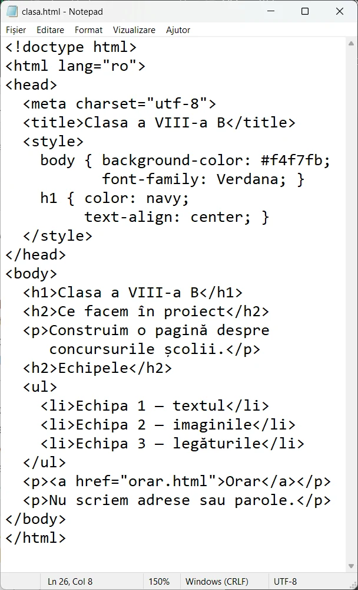</a>
<figcaption>În cod: <code>&lt;style&gt;</code>, titluri, listă și legătură. Nicio parolă, nicio adresă, niciun telefon.</figcaption></figure>
<figure class="captura"><a href="../web-viii/img/pag-pagina-clasei.webp" target="_blank">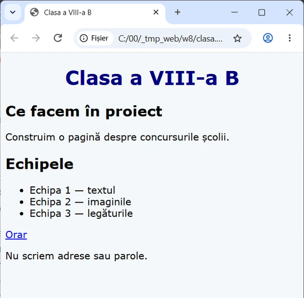</a>
<figcaption>În browser: pagina clasei, gata. Pe ea <b>nu</b> apar adrese, numere de telefon sau parole.</figcaption></figure>`,
qs:[
 {t:'choice',q:'Primești un mesaj: „Ai câștigat o tabletă! Intră în 10 minute pe premii-rapide.test și scrie parola contului.” Ce faci?',o:['Închizi mesajul și anunți un adult','Intri repede, ca să nu pierzi premiul','Trimiți parola, dar nu și numele','Dai mesajul mai departe colegilor'],ok:0,why:'Graba, premiul și cererea de parolă sunt trei semne de inginerie socială în același mesaj. Nimeni serios nu îți cere parola.'},
 {t:'classify',q:'Poate apărea pe pagina clasei?',cats:['Da','Nu'],items:[['Lista proiectelor clasei',0],['Parola platformei școlare',1],['Adresa de acasă a unui coleg',1],['Rezultatul clasei la un concurs',0],['Numărul de telefon al unui elev',1]],why:'Proiectele și rezultatele sunt despre munca clasei. Parola, adresa și telefonul sunt date care pot fi folosite împotriva cuiva.'},
 {t:'hunt',q:'Pagina falsă de mai jos are 4 semne de fraudă. Apasă pe ele.',src:'Felicitări! [[Ai câștigat un telefon!|Un premiu mare, fără să fi participat la ceva: e momeala.]] Intră pe [[https://c0nt-scoala.test/premiu|Adresa imită un nume cunoscut: „c0nt”, cu cifra 0 în loc de litera o. Nici https nu face o pagină falsă sigură.]] Oferta expiră [[în 10 minute.|Graba te împiedică să te gândești.]] Pentru livrare, [[scrie parola contului tău.|Nicio pagină serioasă nu cere parola ca să trimită un premiu.]]',why:'Paginile false folosesc aceleași trucuri: premiu, grabă, adresă asemănătoare și cererea de parolă. Unul singur e deja motiv să te oprești.'},
 {t:'cod',q:'Construiește pagina clasei după specificații. Titlul <code>&lt;h1&gt;</code> să fie „Clasa a VIII-a B”. Adaugă o listă cu cel puțin 3 activități ale clasei, imaginea <code>clasa.jpg</code> cu text alternativ și o legătură spre <code>orar.html</code>. Atenție: în cod e un rând care nu are voie să fie publicat. Șterge-l.',
  start:'<!doctype html>\n<html lang="ro">\n<head>\n  <meta charset="utf-8">\n  <title>Clasa a VIII-a B</title>\n</head>\n<body>\n  <h1>Clasa noastră</h1>\n  <p>Parola platformei clasei: vara2026</p>\n\n</body>\n</html>',
  checks:[
   {el:'h1',text:'Clasa a VIII-a B',msg:'Titlul <h1> trebuie să fie „Clasa a VIII-a B”.'},
   {el:'ul, ol',min:3,child:'li',msg:'Lipsește lista cu cel puțin 3 activități: <ul> cu 3 elemente <li>.'},
   {el:'img',attrs:{src:'clasa.jpg',alt:'*'},msg:'Lipsește imaginea , cu text alternativ.'},
   {el:'a',attrs:{href:'orar.html'},full:true,msg:'Lipsește legătura <a href="orar.html">, cu un text între etichete.'},
   {absent:'parol|vara2026|@|\\d{3}[ .-]?\\d{3}[ .-]?\\d{3}',msg:'În cod a rămas o parolă sau un dat personal (telefon, e-mail), chiar dacă nu se vede pe pagină. Șterge-l de tot din cod.'}
  ],
  solutie:'<!doctype html>\n<html lang="ro">\n<head>\n  <meta charset="utf-8">\n  <title>Clasa a VIII-a B</title>\n</head>\n<body>\n  <h1>Clasa a VIII-a B</h1>\n  <p>Ce facem anul acesta:</p>\n  <ul>\n    <li>Revista clasei</li>\n    <li>Excursia în Carpați</li>\n    <li>Concursul de robotică</li>\n  </ul>\n  \n  <p><a href="orar.html">Orarul clasei</a></p>\n</body>\n</html>',
  why:'Jocul a verificat fiecare cerință pe pagina rezultată: titlul, lista, imaginea cu <code>alt</code>, legătura și lipsa oricărei parole sau a unui telefon. Cuvintele tale pot fi altele.'},
 {t:'choice',q:'Vrei să pui pe pagina clasei o poză de la excursie, în care se văd colegii. Ce faci întâi?',o:['Ceri acordul colegilor din poză și întrebi profesorul','O publici, oricum toți au fost acolo','Scrii sub poză numele complet al fiecăruia','O publici și o ștergi dacă se supără cineva'],ok:0,why:'Poza cu o persoană e un dat personal. Fără acord nu o publici, iar ce ai publicat poate fi copiat înainte să apuci să ștergi.'}
]}
];

JocMotor.porneste({
  cheie:'misiunea_webmaster_viii',
  titlu:'Misiunea Webmaster',
  marca:'Misiunea <b>Webmaster</b>',
  h1:'<span class="tg">&lt;</span>Misiunea Webmaster<span class="tg">/&gt;</span>',
  clasa:'a VIII-a',
  unitate:'VIII-U2',
  unitateTitlu:'Pagini web',
  competente:['CS.1.2','CS.3.2'],
  lectii:'14–21',
  intro:'Șapte niveluri despre paginile web: etichete, antet și corp, paragrafe, imagini, liste, tabele, legături, formatare și siguranța datelor. La fiecare citești o pagină scurtă și răspunzi la întrebări. În cutiile de cod scrii HTML adevărat, iar jocul îl citește ca un browser și îți arată pagina. La final îți iei diploma.',
  banda:'<span class="dots"><i></i><i></i><i></i></span><span class="url">https://<b>clasa-8b.example.com</b>/index.html</span>',
  nivele:LEVELS,
  tipuri:{cod:JocCod},
  diploma:{
    titlu:'Constructor de pagini web',
    rezumat:'etichete HTML, antet și corp, paragrafe, imagini, liste, tabele, legături, formatare și siguranța datelor pe web',
    aplicatie:'editorul de pagini web folosit la clasă',
    provocare:[
      'Fă pagina ta despre o temă la alegere (sportul preferat, un anotimp, un munte din Carpați), cu titlul paginii scris și în <code>&lt;title&gt;</code>.',
      'Pune un titlu <code>&lt;h1&gt;</code>, două paragrafe și o imagine pe care ai voie s-o folosești, cu text alternativ.',
      'Adaugă o listă cu cel puțin 3 elemente și o legătură spre o a doua pagină a ta.',
      'Centrează titlul și alege o culoare de fundal cu contrast bun.',
      'Verifică: nicio parolă, adresă, telefon sau poză cu colegi fără acordul lor. Salvează ca <code>Nume_Prenume_pagina.html</code> în folderul clasei.'
    ]
  }
});
</script>
</body>
</html>
